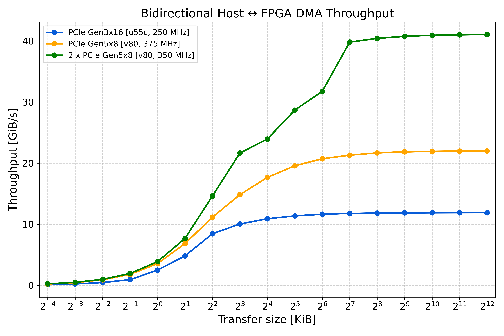
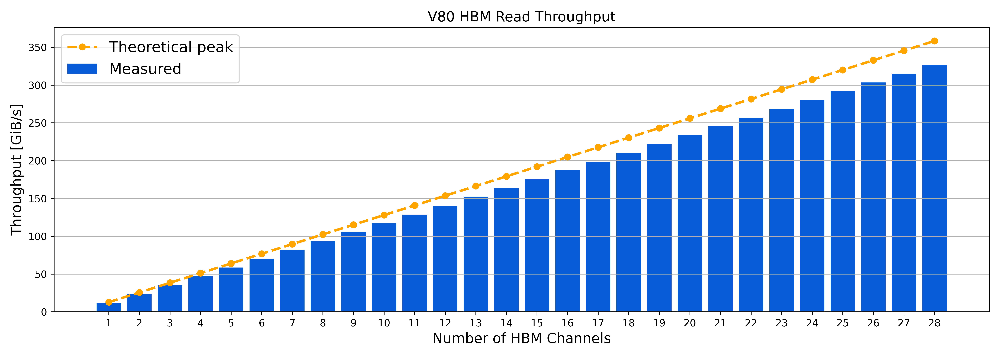

V80 notes
Introduction
PR #193 introduces support for the V80 in Coyote, while maintaining full compatibilty with supported UltraScale+ devices (U55C, U250, U280). In short, the new features for the V80 are:
Data movement via the hardended QDMA, with support for both PCIe Gen 4x16 and PCIe Gen 5x8 configurations. The QDMA is configured in streaming and bypass mode, similar to the XDMA on UltraScale+ devices.
Support for raising interrupts and reading/writing memory-mapped registers through the QDMA.
Support for accessing HBM memory, with two implementations of HBM on the V80: “block” and “unified”. “block” partitions the memory space into smaller fragments, reducing NoC contention and maximising throughput. “unified” is the closest to the existing implementation from UltraScale+ devices, allowing each stream to access the entire memory space.
Support for reconfiguration of both the shell and the vFPGAs (see note below on nested DFX). Like on other platforms, the shell is explicitly floor-planned to maximise its available resources while achieving timing closure.
Note
Coyote aims to provide a program once, run anywhere environment for supported devices. This means that applications developed and tested on one device (e.g., U55C) can also run on another device, such as the V80, without modifications.
Networking support will be added shortly. Additionally, as needed, a future pull request can also include support for DDR memory (currently, the V80 is only configured to use HBM).
The following table summarises the examples/features supported on the V80:
Example |
Status |
|---|---|
1 Hello World |
✅ |
2 HLS Vector Add |
✅ |
3 Multi-tenancy |
✅ |
4 User interrupts |
✅ |
5 Shell reconfiguration |
✅ |
6 GPU P2P |
✅ |
7 FPGA-initiated DMA |
✅ |
8 Multi-threading |
✅ |
9 RDMA |
❌ |
10 vFPGA reconfiguration |
✅ |
11 Traffic sniffer |
❌ |
Tip
Like on UltraScale+ platforms, user applications (vFPGAs) for the V80 can be written in RTL (e.g., SystemVerilog, VHDL) or Vitis HLS.
Tip
Like on UltraScale+ platforms, all non-platform specific features are supported, including: multi-tenancy, GPU-FPGA peer-to-peer data movement, FPGA-initiated DMA etc.
How to use Coyote on a V80 FPGA?
To get started with the V80, it is sufficient to pass the correct device to CMake when building the hardware:
cmake -DFDEV_NAME=v80
Additionally, with the introduction of the V80, when compiling the driver, the target platform must be specified:
make TARGET_PLATFORM=versal # For Versal devices, i.e. the V80
make TARGET_PLATFORM=ultrascale_plus # For UltraScale+ devices, i.e. U55C, U250, U280
- Finally, it is important to note the difference in bitstream / programmable image extensions between UltraScale+ and Versal devices:
On UltraScale+ devices, full bitstreams have the extension .bit, while partial bitstreams for vFPGAs have the extension .bin.
On Versal devices, both full and partial programmable devices images (PDIs) have the extension .pdi.
Tip
On the ETHZ HACC, the script program_hacc_local.sh can be used to program both Versal and UltraScale+ devices regardless of the extension.
For example, the full flow of synthesising and running the Example 1 on the V80 would be:
# Build the hardware for the V80
cd examples/01_hello_world/hw
mkdir build && cd build
cmake -DFDEV_NAME=v80 ../
make project && make bitgen
# Build the driver for the V80
cd driver && make TARGET_PLATFORM=versal
# Compile software (same for all platforms)
cd examples/01_hello_world/sw
mkdir build && cd build
cmake ../
make
# Program the FPGA with the bitstream
# On the ETHZ HACC, the utility script program_hacc_local.sh can be used
bash util/program_hacc_local.sh examples/01_hello_world/hw/build/bitstreams/cyt_top.pdi driver/build/coyote_driver.ko
# On custom set-ups, the steps are the same as on UltraScale+ devices
# 1. Program the FPGA using Vivado Hardware Manager
# 2. Do a PCIe hot-plug/rescan OR a warm reboot
# 3. Load the driver using insmod
Vivado version compatibility
The V80 is supported out of the box in Coyote with Vivado 2024.2 or newer.
While synthesis with Vivado 2024.1 works, the format of design checkpoints in Vivado has changed significantly in Vivado 2024.2, leading to static checkpoints generated in 2024.1 being incompatible with 2024.2 or newer. Recall, since the static layer is platform-specific and rarely changed, Coyote provides a routed and locked checkpoint of the static layer for each supported platform, speeding up hardware builds. For the V80, the static checkpoint was generated using Vivado 2024.2, and is thus only compatible with Vivado 2024.2 or newer.
Users wishing to use Vivado 2023.2 or 2024.1 need to regenerate the static checkpoint during by setting:
cmake -DFDEV_NAME=v80 -DBUILD_STATIC=1 -DBUILD_SHELL=0
Important
We recommend using Vivado 2024.2 or newer, due to various improvements and bug fixes in Vivado for Versal devices (specific details can be found in Vivado release notes).
PCIe configuration & performance
In Coyote, the QDMA on the V80 can be condifigured as either PCIe Gen 4x16 or PCIe Gen 5x8, both of which should have the same theoretical throughput of 32 GBps. The configuration can be changed by setting the PCIE_GEN variable in CMake for hardware synthesis:
set(PCIE_GEN 4) # for PCIe Gen 4x16
set(PCIE_GEN 5) # for PCIe Gen 5x8
Note
The V80 can be configured to include two QDMAs, with a theoretical bandwidth of 64 GBps. While tested, this feature is not fully supported in Coyote yet. It will be added in a future pull request.
The plot below shows the measured throughput for host-to-device transfers using the QDMA on the V80, configured in PCIe Gen 5x8 mode, compared to the XDMA on the U55C, configured in PCIe Gen 3x16 mode.
{kind=link}

Hint
Higher throughput can be achieved by increasing the clock frequency. More details can be found in the section on tuning clock frequency and timing closure below.
In case of stalling host-to-device transfers, it is recommended to query the QDMA debug registers from sysfs and compare against the QDMA specification for Versal:
cat /sys/kernel/coyte_sysfs_0/cyt_attr_qdma_debug_regs
HBM configuration & performance
The V80 includes 2 HBM stacks of 16 GB each, for a total of 32 GB of HBM memory. The HBM memory can be accessed through the Network-on-Chipc (NoC) through so-called “HBM_NMUs”. The V80 includes up to 64 HBM_NMUs, each capable of delivering up to 12.8 GBps of bandwidth, for a theoretical total bandwidth of 819.2 GBps to HBM memory.
Like on other devices, the number of HBM channels for a single vFPGA, which directly corresponds to the number of HBM_NMUs, can be set in Coyote by setting the N_CARD_AXI variable during hardware synthesis. Given N_REGIONS vFPGAs with N_CARD_AXI HBM channels, there will be N_CARD_AXI * N_REGIONS HBM channels available in Coyote.
Coyote supports two implementations of HBM on the V80: “block” and “unified”. The mode can be set by setting the HBM_IMPL variable in CMake during hardware synthesis:
set(HBM_IMPL "unified") # for the "unified" implementation
set(HBM_IMPL "block") # for the "block" implementation
“unified” matches the existing implementation from UltraScale+ devices, allowing each HBM_NMU to access the entire memory space. This allows maxium flexibility, but can lead to NoC contention and lower throughput, since accessing memory may require traversing the horisontal NoC.
“block” partitions the memory space into smaller fragments (512 MB, matching one HBM pseudo-channel), reducing NoC contention and maximising throughput. In this implementation, applications have fine-grained control over which HBM PC their memory is stored. Each vFPGA can store the buffer in a pseudo-channel identfied by the mem_block paramter, which can take a value between 0 and N_CARD_AXI-1. For example, to allocate a 4 KiB buffer in HBM pseudo-channel 2 and read it, the following code can be used:
// Allocate 4 KiB buffer in HBM pseudo-channel 2
// NOTE: The mem_block parameter is optional; if not specified, the driver picks the first HBM PC with sufficient space.
// NOTE: The mem_block paramter can take any value between 0 and N_CARD_AXI-1
void *mem = coyote_thread.getMem({.alloc = coyote::CoyoteAllocType::HPF, .size = 4096, .mem_block = 2});
// Create scatter-gather (SG) entry
// NOTE: In "block" mode, the .dest MUST match the mem_block where the buffer is allocated. If it does not match, the transfer will stall.
coyote::localSg sg = { .addr = mem, .len = 4096, .stream = coyote::STRM_CARD, .dest = 2 };
Tip
The “unified” implementation matches the Uniform Random and the block implementation matches the Point-to-Point memory mapping. More details can be found in AMD docs on NoC tuning.
The figure below shows the measured HBM throughput in “block” mode.
{kind=link}

While the V80 supports up to 64 HBM_NMUs, practically using all of them is difficult due to design congestion and timing closure issues. Coyote employs a few optimizations to automatically spread out the HBM_NMUs accross the FPGA fabric. However, Coyote also includes abstractions (memory virtualization), as well as clock domain crossing (CDCs), to ensure data is delivered to the vFPGA at the correct clock frequency, increasing design complexity.
On the V80, Coyote has been tested up to 32 HBM_NMUs. More channels can be used by reducing the clock frequencies (SCLK_F, ACLK_F, HCLK_F), tuning number of outstanding transaction (N_OUTSANDING) and packetization size (PMTU_BYTES), which affect data FIFO depths, and/or disabling the shell floorplan (see section on tuning clock frequency and timing closure below).
Dynamic reconfiguration
Like on UltraScale+ platforms, Coyote supports dynamic reconfiguration of both the shell and the vFPGAs on the V80; though with some caveats that should be noted.
Recall that, in Coyote, user applications (vFPGAs) are part of the shell, and Coyote implements a nested reconfiguration controller which allows the reconfiguring of the shell itself (e.g., to change network or memory configuration) or the individual applications (vFPGAs).
Tip
For more details on shell and application reconfiguration in Coyote, refer to Examples 5 and 10 on GitHub, as well as the FAQ section of the documentation.
However, on Versal platforms, Vivado lacks the support for nested reconfiguration. Coyote’s workaround for this is to only enable one level of reconfiguration; that is it is only possible to reconfigure the shell or the vFPGAs with the current bitstream but not both. By default, like in the rest of Coyote, it is assumed that the shell is reconfigurable, while vFPGA reconfiguration must be explicitly set through the CMake variable EN_PR, which is disabled by default. To enable vFPGA reconfiguration on the V80, the following must be set during hardware build:
# EN_PR enables vFPGA reconfiguration
# EN_SHELL_PBLOCK=0 disables the shell floorplan
cmake -DFDEV_NAME=v80 -DEN_PR=1 -DEN_SHELL_PBLOCK=0 ../
make project && make bitgen
Note
Reconfiguring the entire shell by definition also reconfigures the vFPGAs, since they are part of the shell (see Example 5 for more details). However, when EN_PR=1, it is possible to reconfigure individual vFPGAs without affecting other vFPGAs or the shell itself.
Tuning clock frequency & timing closure
Compared to UltraScale+ platforms, the V80 is a larger device, with hardened blocks (e.g., QDMA, HBM) and an on-chip NoC, all of which simplify timing closure and allow for higher clock frequencies. Additionally, unlike UltraScale+ platforms, which hardcode the XDMA clock frequency to 250 MHz, the V80 has a configurable QDMA clock frequency. As such, achieving high-throughput designs on the V80 can be done by increasing the clock frequency.
Specifically, on the V80, one can configure:
Static layer clock frequency (SCLK_F; only applicable to Versal devices; on UltraScale+ devices it always defaults to 250 MHz)
Shell clock frequency (ACLK_F; also applicable to UltraScale+ devices)
App (vFPGA) clock frequency (UCLK_F; also applicable to UltraScale+ devices)
Note
Since Coyote provides a static checkpoint of the static layer, SCLK_F can only be set during static build flows, which regenerate the static checkpoint (example below). In shell build flows, which link against the provided static checkpoint, it defaults to 333 MHz.
Note
To set the user clock frequency (UCLK_F), user clock domain crossing must be enabled by setting EN_UCLK = 1. Otherwise, the user clock frequency will default to the shell clock frequency (ACLK_F).
# An example of setting the static and shell clock frequency to 350 MHz
# Place-route-is done with optimisation directives for better timing closure (BUILD_OPT=1)
cmake -DFDEV_NAME=v80 -DBUILD_STATIC=1 -DBUILD_SHELL=0 -DSCLK_F=350 -ACLK_F=350 -DBUILD_OPT=1 ../
make project && make bitgen
Attention
When BUILD_OPT is set to 1, Coyote will use advanced Vivado directives for better timing closure. However, starting with Vivado 2024.2 on Versal devices, ML-based placer directives (i.e. Auto_* directives) are no longer supported. Instead Coyote defaults to AggressiveExplore for placement. In case of timing closure issues, please refer to Vivado documentation for other placement directives to try and modify scripts/impl/pnr_shell.tcl accordingly.
Tip
In most cases, the shell and static layers should use the same clock frequency, as the bottleneck is typically on the lowest frequency path (unless there is data compression). As such, there is rarely advantages in setting one clock frequency higher than the other; in fact, it can lead to timing closure issues.
Finally, recall that Coyote explicity floorplans the shell and static layer, to enable dynamic reconfiguration of the shell (for more details refer to Example 5 on GitHub). However, explicit floorplanning can sometimes hinder timing closure. In case shell reconfiguration is not needed, the floorplan (and therefore, shell reconfiguration), can be disabled during a static build flow by setting:
cmake -DFDEV_NAME=v80 -DEN_SHELL_PBLOCK=0 -DBUILD_STATIC=1 -DBUILD_SHELL=0 ../
make project && make bitgen
Tip
In addition to disabling the shell floorplan, one case pass the target clock frequencies to CMake (e.g., SCLK_F, ACLK_F) and buid with optimizations.